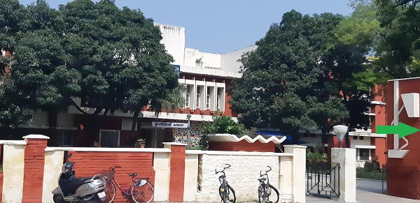

|  |
AboutSarojini Bhawan, the first Girls Hostel in IIT Roorkee, was established in the year 1966-67 by Smt. Lakshi Kanntamma Reddy.As the time passed,it was extended four times. The wing named Krishna was constructed in year 1985-86 and the second extension,which resulted in the Disang wing ,was build in year 1988-89.The Alaknanda wing was constructed in 2000-2001. The Newest wing,Sabarmati was built in 2002-2003. The name of the bhawan is dedicated to the Nightangle of India, Sarojini Naidu, who is an inspiration for all girls that sky is the limit. The WINGS are named after the four pious rivers that flow from the four directions of our sacred country. In addition to this the construction of the wing is such that each one has a separate lawn in front with a beatific garden that is well maintained by the gardeners. Furthermore Bhawan has a well furnished COMPUTER ROOM (Cyber Cafe), WASHING MACHINE ROOM and T.V. ROOM with the premises of the Bhawan. To boast about the bhawan sooner a GYM ROOM is going to get established. Moreover, the WI-FI connection has also been set up in 2007 for the convenience of the girls. Apart from the above said facilities a small CANTEEN and a STATIONARY SHOP are there in the Bhawan itself. Lots of construction has been done to provide the best ventilation in the mess kitchen. A ROTI MAKER MACHINE has been provided in the mess. Emergency light is also provided in the MESS to meet the power cut. The idea of keeping a stereo player in the mess is in progress. In short SAROJINI BHAWAN IS SUPPOSED TO BE THE WELL FURNISHED Bhawan. |